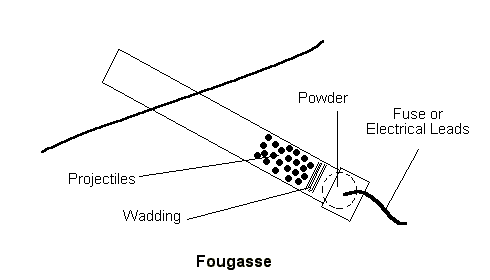
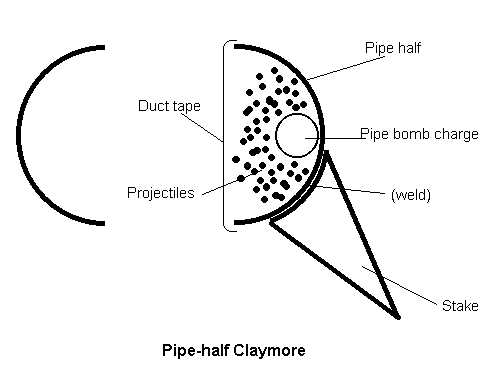
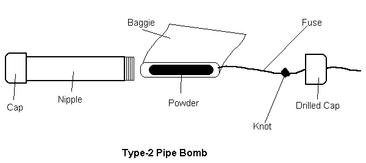
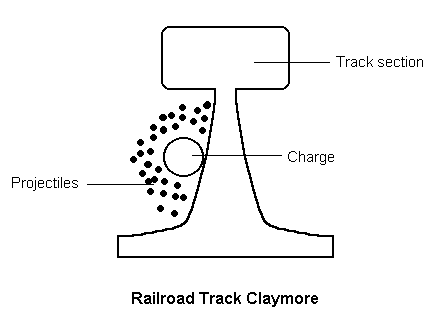
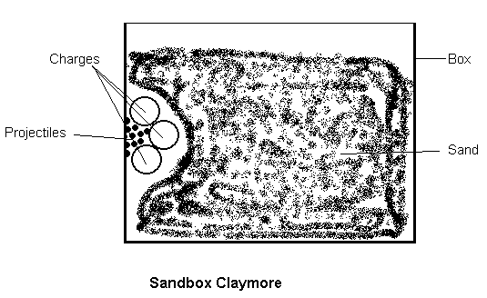

Improvised Claymores
by
Tom Spooner
|
The money doesn't roll in, but the requests do. DF! forwarded to me a request for information on improvised claymores. I came up with a few ideas. Between short notice (they wanted this for the next issue) and a lack of incentive to attract attention by blowing things up, this is essentially a theoretical piece: A combination of common knowledge, common sense, and a dash of creativity. Apply these ideas with care, should you decide to try them out. A claymore is a semi-directional anti-personnel mine. When triggered, they fill the air in front of them with small, high-velocity projectiles. They are commonly used to protect the perimeter of fixed locations. You might think of them as expendable, high-power, remote-control shotguns. Which brings me to the first suggestion for improvising one of these thingies. A while back, I wrote an article about perimeter intrusion alarms which use those 12 gauge flare shells. Replace the flare with a live shotgun shell, point the gadget horizontal to the ground, and you have something that'll disturb most intruders. Next up is the fougasse (pardon my spelling; I'm working from memory, and my dictionary doesn't have the word) (Neither does mine. - Ed.). Take a two or three inch pipe, cap one end, dump some gunpowder in, pack some wadding, add ball bearings, bits of broken glass or scrap metal for the projectiles. Basically, you have a small, homemade cannon. Bury it in the ground with the open muzzle sticking, aimed in the general direction against which you want to defend.
 Set it off with cannon fuse or an electrical igniter. Another way to make a directional bomb like a claymore is to put a resistant mass behind an explosive charge, and loose projectile material in front of it. If you have some four or six inch iron pipe laying around, try this. Take a twelve inch length and cut it in half, to get two lengths with a half circular cross section. Weld two "stakes" of quarter inch plate to the exterior convex side of the half pipe. Place your explosive inside the channel, and put a handful or two of ball bearings on top of the charge. Wrap in duct tape to hold everything in place. Set the mine by planting the stakes firmly in the ground at your perimeter.  The explosive charge could be anything that goes Boom!, but if you have Semtex around your shop, I doubt you'd bother reading my stuff. So I assume you're working with a minimal improvised kit. Try building a classic, Type-2 Internet pipe bomb. Get a one or two inch diameter "nipple," which is a piece of pipe maybe eight inches long and pre-threaded on each end. You need a pipe cap to fit each end. Drill a small hole in one cap (just large enough to admit a fuse or wires for an electrical igniter). Close one end of the pipe with the undrilled cap. Run your fuse or wires through the hole in the other cap. Tie a knot in them on the inside portion of the length so the they won't pull out of the hole. Don't pour your gunpowder into the pipe. That could result in grains in the pipe threads which might be inadvertently ignited when you screw the remaining cap on. That could result in a premature explosion inadvertently sending you to the morgue. This is one way that wanna-be Unabomber, Juniors off themselves, as seen on TV. Instead, partially fill a plastic baggie with gunpowder, roll it into a rough cylinder around the fuse or igniter, and insert that into the pipe. Screw the cap down.

Getting back to claymores, here's another idea: Get a short length of railroad track (many people have some, which they use for improvised anvils). Place your charge and ball bearings in one side, between the base and upper track section.  Something else that might work relies on a shaped-charge effect. Take three small Type-2 pipe bombs, arranged to form an open-sided triangle, and fill the open gap with shrapnel. You can set this up against the wall inside a cardboard box, then fill the box with sand. The blast should tend to direct the shrapnel in one direction, while the rest of blast front is absorbed by and disperses the sand, more or less harmlessly. I don't recommend being immediately behind this thing, though.  A word about shrapnel. Ball bearings should work well; look for bearings in the .30 caliber range. If you load shotshells and have 00 buckshot on hand, that's great. But glass from broken bottles shouldn't be discounted, and if the Feds search your house, glass jars and bottles stored in the kitchen look pretty innocuous. Nails are also nasty. Except for very short-range effects, don't bother with .177 caliber BBs. As small and light as they are, I think they'll shed velocity - thus energy - too quickly to be all that great. But you have to make use of what's on hand. That should get you started. Have fun, and try not to kill your self.
Did you like this article?
|